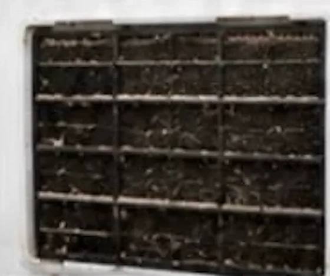
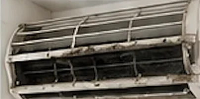
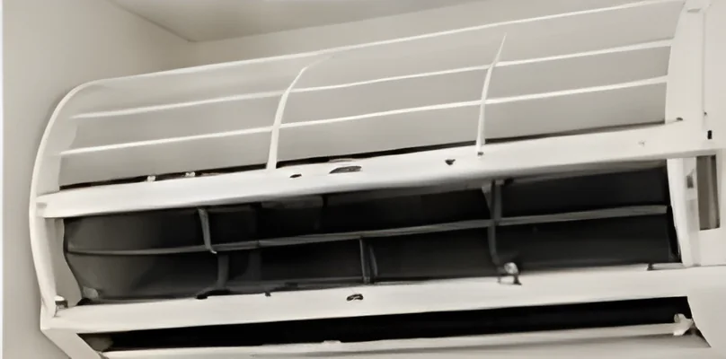
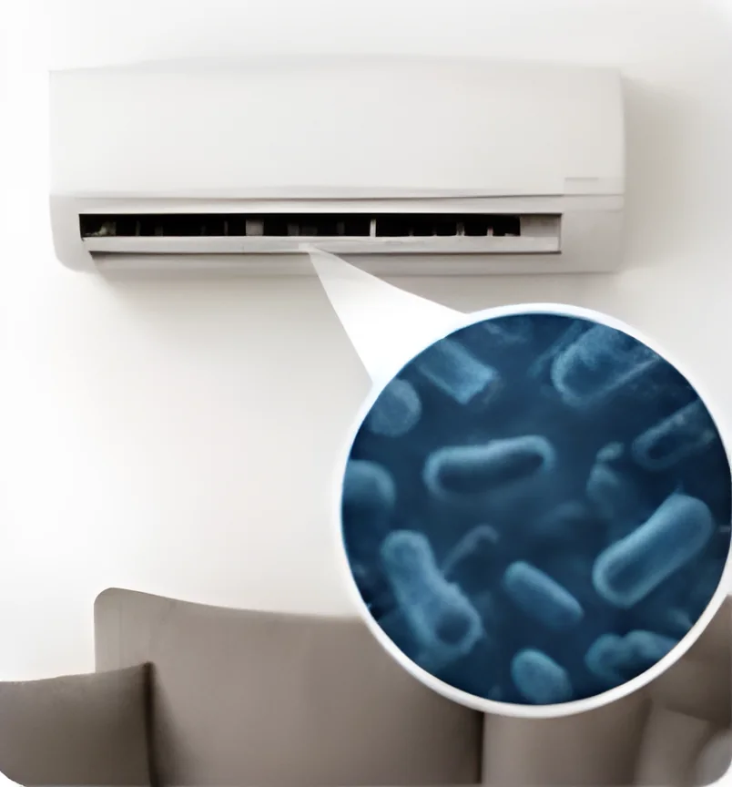

Nástenné klimatizácie
Rozobratie, čistenie výmenníka, ventilátora a vaničky, dezinfekcia.
ObjednaťRozoberieme jednotku, vyčistíme výmenník aj ventilátor a vydezinfikujeme ju. Pracujeme v Bratislave a okolí, na objednávku prídeme do 60 minút.
Potiahnite posúvač doľava a doprava.
V klimatizácii sa časom usádza prach, plesne a baktérie. Pri každom zapnutí ich jednotka rozfúka po miestnosti. Zanesená klimatizácia navyše chladí horšie a míňa viac elektriny.
Odporúčame čistenie minimálne 1× ročne.
Filtre zachytia iba časť nečistôt. Vo výmenníku, ventilátore a odtoku kondenzátu sa postupne usádzajú baktérie, plesne a biofilm. Bežné čistenie filtrov ich neodstráni.

Rozobratie, čistenie výmenníka, ventilátora a vaničky, dezinfekcia.
ObjednaťStropné kazety a potrubné rozvody v kanceláriách a prevádzkach.
ObjednaťAntibakteriálne ošetrenie, ktoré odstráni až 99,9 % baktérií a plesní.
ObjednaťZaprášené vykurovacie telesá hrejú horšie a pália prach. Vyčistíme ich zvnútra.
Zistiť viacJedna nástenná jednotka zaberie približne hodinu. Pracujeme s ochrannou plachtou, takže u vás po nás nezostane neporiadok.
Skontrolujeme stav klimatizácie a mieru znečistenia.
Rozoberieme jednotku a odstránime prach, nečistoty a plesne.
Vydezinfikujeme všetky časti a odstránime baktérie aj zápach.
Zložíme jednotku a overíme funkčnosť a výkon.


A cítiť. Zápach zmizne hneď po prvom zapnutí.

Ak klimatizáciu používate často, máte doma alergika, deti alebo domáce zvieratá, odporúčame čistenie každých 6 až 12 mesiacov.
Objednať termínProfesionálny prístup, rýchly termín a perfektne odvedená práca. Klimatizácia ako nová.
Konečne čistý vzduch bez zápachu. Odporúčam každému, kto chce dýchať zdravo.
Pán prišiel načas, všetko vysvetlil a ukázal, čo bolo vo ventilátore. Super skúsenosť.
Prídeme k vám do 60 minút od objednania.
Objednajte si profesionálne čistenie klimatizácie a dýchajte zdravší vzduch.